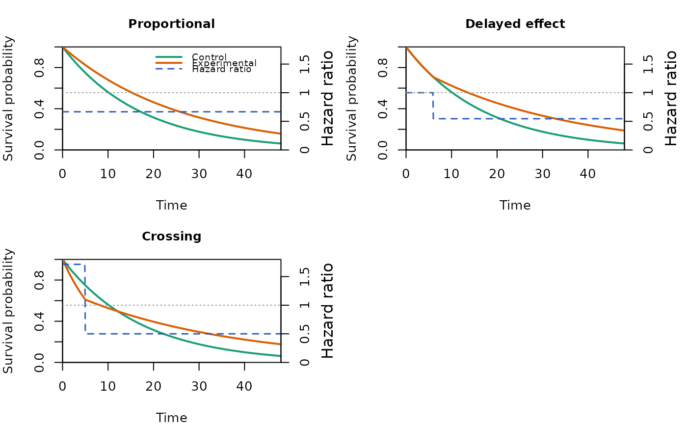

Build a Set of Two-Group Trial Scenarios for Design Exploration
Source:R/gen_scenario_fast.R
gen_scenario_fast.RdAssembles one or more two-group time-to-event scenarios into a single
scenario_fast object for design-stage exploration. Each scenario is a
complete set of simdata_fast arguments, so the same object can
be drawn with plot.scenario_fast, summarized with
print.scenario_fast, and passed to simdata_fast
to generate data. This is a design-helper that only collects and merges
arguments; it performs no simulation and no compiled computation.
Usage
gen_scenario_fast(scenarios, shared = list(), labels = NULL)Arguments
- scenarios
A non-empty list. Each element is a named list of
simdata_fastarguments (optionally withlabelandnull) that defines one scenario.A named list of
simdata_fastarguments common to every scenario. Scenario-specific arguments take precedence.- labels
Optional character vector of scenario labels, one per scenario.
Value
An object of class scenario_fast: a list with element
scenarios (a named list, one entry per scenario, each holding the
merged argument list args, the label, and the null
flag) and element shared (the shared arguments).
Details
Each element of scenarios is a named list of arguments that defines one
scenario. Those arguments override the shared arguments in shared, so
that parameters held constant across scenarios (sample size, accrual, dropout)
are written once in shared and only the varying parameters are written
per scenario. The survival specification follows simdata_fast
exactly: e.hazard or e.median given as a two-element list
(control first, treatment second) for the two groups, with e.time
supplying the breakpoints of a piecewise-exponential hazard (last element
Inf). A single hazard or median gives an exponential group.
Two optional fields may appear inside a scenario list and are interpreted by
this function rather than passed on: label sets the scenario label, and
null (logical) flags a null scenario for later filtering. Every other
field is treated as a simdata_fast argument. The scenario label
is taken from labels, then from the label field, then from the
names of scenarios, then from a default "Scenario k".
A factorial set of scenarios is built by constructing the scenarios
list with the base tools, for example mapping over the rows of an
expand.grid of the parameters that vary.
Examples
# Three two-group scenarios sharing accrual and sample size: a proportional-
# hazards case, a delayed-effect case, and a crossing-hazards case.
scn <- gen_scenario_fast(
scenarios = list(
"Proportional" = list(e.median = list(12, 18)),
"Delayed effect" = list(
e.hazard = list(log(2) / 12, c(log(2) / 12, log(2) / 22)),
e.time = c(0, 6, Inf)
),
"Crossing" = list(
e.hazard = list(log(2) / 12, c(log(2) / 7, log(2) / 24)),
e.time = c(0, 5, Inf)
)
),
shared = list(n = c(150, 150), a.time = c(0, 12), a.rate = 300 / 12)
)
print(scn)
#> A scenario_fast object with 3 scenarios (window 0 to 48)
#>
#> Scenario Null N Median_C Median_T HR_start HR_end Crossing
#> Proportional FALSE 300 12 18.00 0.667 0.667 FALSE
#> Delayed effect FALSE 300 12 17.00 1.000 0.545 FALSE
#> Crossing FALSE 300 12 11.86 1.714 0.500 TRUE
plot(scn)

# Generate data for every scenario with a short composition step. From here
# analysis_fast() and simsummary_fast() are applied per scenario as usual.
sim_list <- lapply(scn$scenarios, function(s) {
do.call(simdata_fast, c(s$args, list(nsim = 100, seed = 1)))
})
nrow(sim_list[[1]])
#> [1] 30000